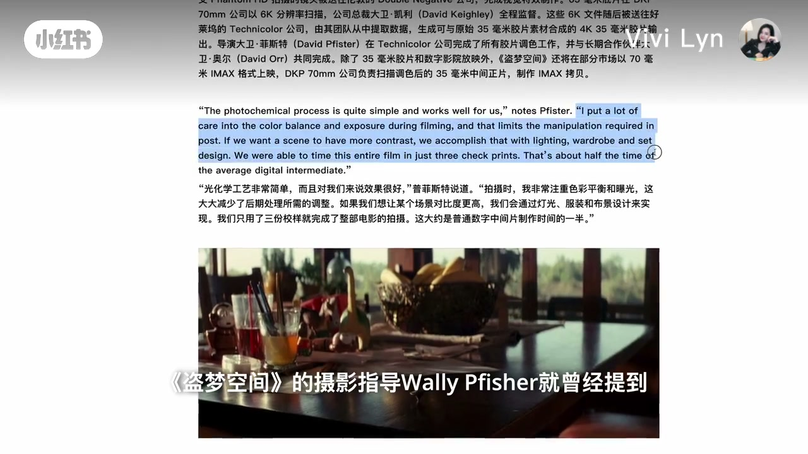
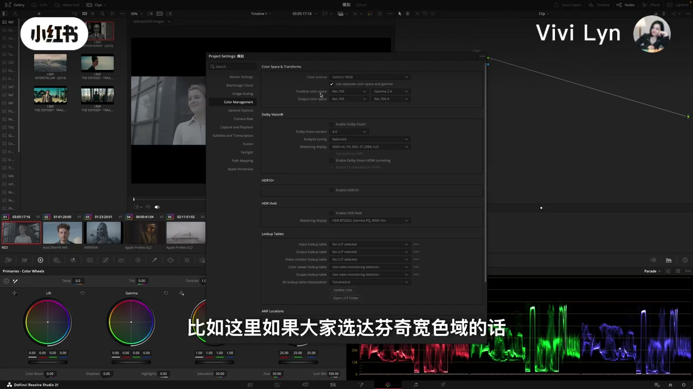
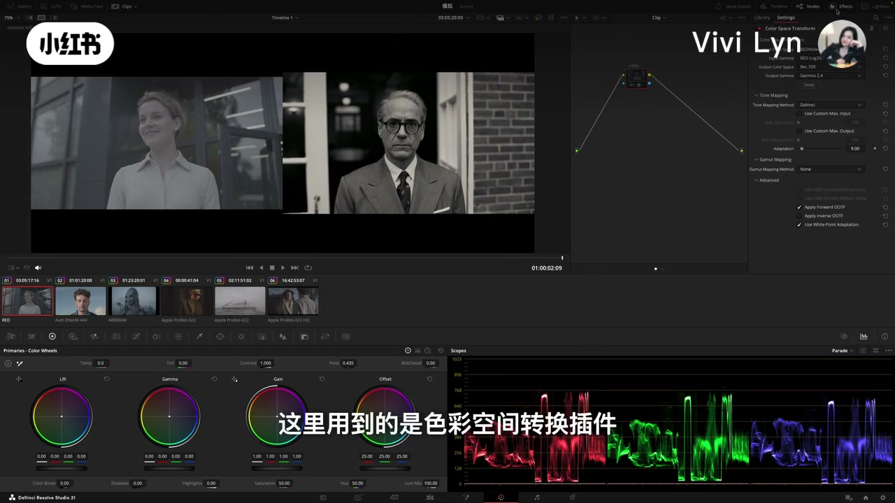
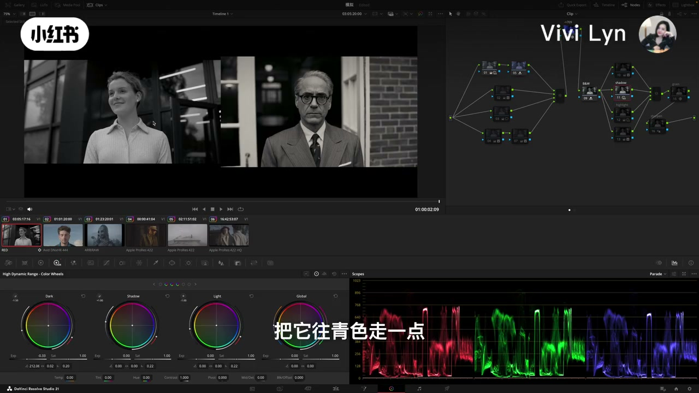
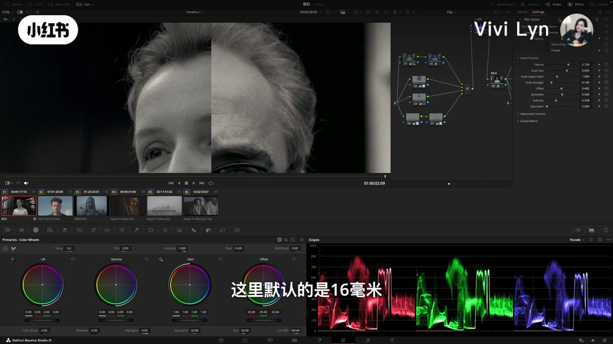
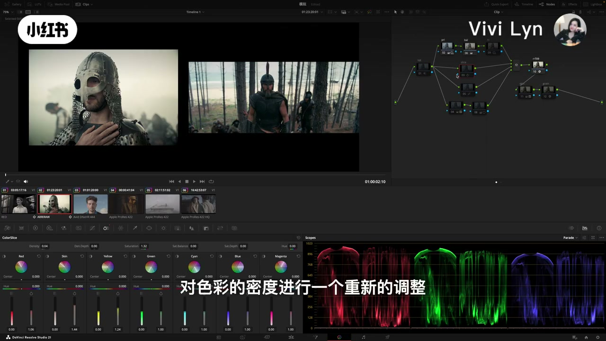
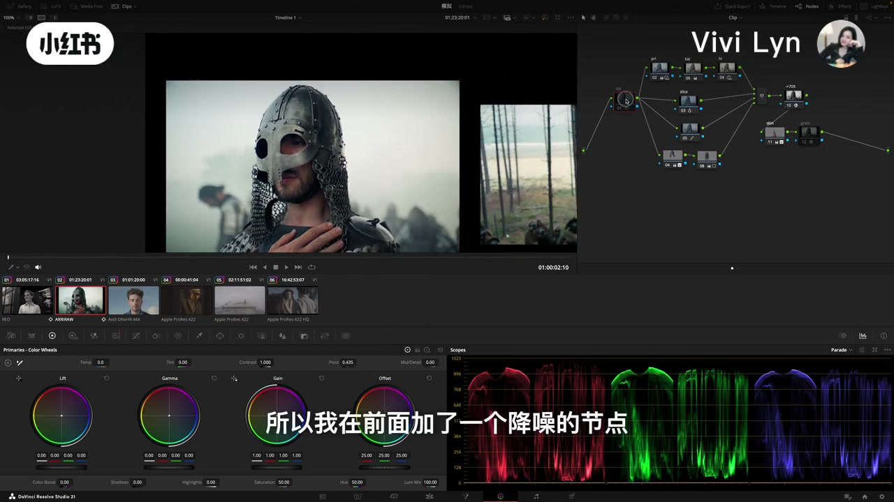
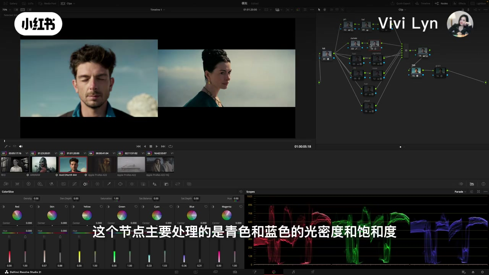
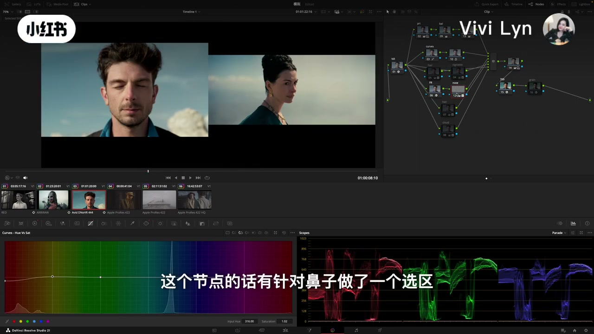
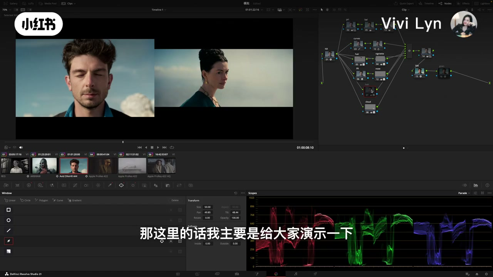

内容要点
这是一条达芬奇调色页上的仿片演示，大约十分钟。她用《奥本海默》黑白静帧和两段《奥德赛》相关画面做参照，节点从色彩空间转换走到一级影调、二级窗口，最后才加颗粒。片头还借柯达资料和《盗梦空间》摄影指导的说法，说明数字调色匹配的是光化学拷贝的视觉结果。
知识结构
数字调色可以匹配胶片拷贝的最终外观。对多数创作者，缺口不在软件，而在拍摄阶段已经做好的曝光、灯光、服装和置景。
时间线停在默认的 Rec.709 Gamma 2.4。她提醒：若改成达芬奇宽色域，同样的节点力度会变，思路不变。
RED 素材经色彩空间转换还原后去色。参照静帧的暗部更重、略偏青，人脸落在中间灰，高光偏暖。一级打底，窗口和选区再修脸、灯光和衣服。
达芬奇自带颗粒默认停在 16 毫米，只为靠近观众在数字放映和流媒体上看到的成片。《奥本海默》摄影负片是 65 毫米，原始拷贝会细腻得多。要模拟的重点是影调分布和色彩结构。
一级色轮配 HDR 色轮重铺影调，Color Slice 加密度和饱和，曲线把偏冷的青色往暖里带，窗口处理头盔和脸。噪点明显时，降噪放在节点最前。素材若已强压缩，她认为容易无力回天。
第三例仍被字幕称作《奥德赛》静帧。青和蓝的密度、高光暖调、磨皮、鼻子和云的黄色被分开处理。改发色只是演示颜色搭配，正常项目没有特殊要求就不必改。颗粒因时间不够没有展开，她也提到有的甲方不喜欢颗粒。
仿诺兰，先看参考静帧的影调落在哪、颜色彼此怎么搭配。色彩空间转换和一级基调决定能不能靠近；颗粒、光晕是成片质感的最后一层，不是质感本身。素材太噪或压得太狠，节点补不回来。
00:00–01:19 可以模拟，但质感不靠后期单干
视频从一条私信开场：达芬奇里能不能调出诺兰电影的胶片质感。她说可以模拟。理由不是“软件里有胶片预设”，而是制作流程里本来就有人在做这件事。烧录字幕把口播里的“科大”写成柯达：官方资料提到，做数字调色时，右边投已完成光化学配光的胶片拷贝，左边放数字版本，调色师把胶片的视觉效果匹配过去。按她的转述，数字调色模拟的是胶片的最终外观。
「所以从技术上来说，数字调色完全可以去模拟匹配胶片的最终外观。」
话锋马上转开。对大多数创作者，问题不是达芬奇做不做得到，而是诺兰的质感本来就不全靠调色。它来自胶片成像和制作工艺，也和拍摄时的曝光、灯光、服装、美术有关。00:43 切到《盗梦空间》的室内桌面，字幕点名摄影指导 Wally Pfister（口播听成 Wally Fisher，片名听成《大梦空间》）。她转述：色彩平衡和曝光在拍摄阶段就控制好；若要更强的对比，直接用灯光、服装和置景完成，从而少做后期。口播里的“质景”，按上下文是置景。
所以观众最后看到的“诺兰质感”，有不少在进调色之前就已经在了。她仍认为，用数字摄影机的人值得在后期学这些视觉规律。这期她说会从《奥本海默》《奥德赛》和《星际穿越》里抽场景，从胶片模拟的角度拆：质感到底从哪来，达芬奇里真正该模拟的重点是什么。调色页左侧画廊里能看到 INTERSTELLAR (2014) 和 THE ODYSSEY 的字样，和这句预告对得上。

柯达那份资料的原页没有在画面里展开，上面这段是作者转述，不是对柯达原文的核对。Pfister 的原话同样只出现在她的转述里。
01:19–01:41 先声明：这期没做色彩管理
进到达芬奇调色页后，她先把前提说死。今天所有案例没有做特别的色彩管理。01:32 工程设置打开着：色彩科学是 DaVinci YRGB，勾了单独的色彩空间和伽马；时间线色彩空间 Rec.709，时间线伽马 Gamma 2.4；输出色彩空间 Rec.709，输出伽马显示为 Rec.709-A。口播只强调时间线是默认的 709 Gamma 2.4，烧录字幕也是这一句。输出伽马为什么写成 Rec.709-A，她没有解释。
字幕接着说：如果这里改选达芬奇宽色域，今天这些节点对画面的力度会有差别，整体思路和方向仍一致。这是使用边界，不是可选项的教程。后面出现的 Lift、Gamma、HDR 色轮和 Color Slice，都是在这条未做色彩管理的时间线上演示的。

01:41–04:19 《奥本海默》黑白：先影调，再局部
口播先说“第二个案例”，随即又说“第一个案例”，内容是《奥本海默》黑白场景里的一张静帧。烧录字幕把听成“竞争”的词写成静帧。她的理由很直接：对数字调色，影调永远是决定画面质感的关键一步，所以先拿黑白练。熟悉诺兰的人会知道，他的片子里黑白场面不算少。口播里“画面是感”按语境是画面质感。
第一步是还原。02:02 选中的是色彩空间转换节点，字幕也这么说。检查器里输入色彩空间是 REDWideGamutRGB，输入伽马是 RED Log3G10，输出到 Rec.709、Gamma 2.4，色调映射方式是 DaVinci。时间线上这段素材标着 RED。口播“对这个绘片进行还原”，画面上就是给 RED 素材做色彩空间转换，不是另一块插件。

还原之后先去色。她在 709 后面的节点里用 RGB 混合器，而不是只拉饱和度旋钮。对照静帧，她指出三件事：暗部比重更大，人脸主要落在中间灰，暗部有点发青，高光有点偏暖。为什么《奥本海默》黑白会是暗部冷青、高光偏暖，她说自己以前单独做过一期，这里不展开。
影调用了两个节点，工具可以混着用。第一个节点主要是一级调色轮的 Lift 和 Gamma，加上 HDR 色轮的 Dark。第二个节点再用 RGB 混合器，靠三个通道不同的数值重铺影调。02:22 附近混合器上能看到红、绿输出大约 0.71、蓝输出大约 0.87，这是那一帧的当前读数，她没有把它说成标准配方。基调大致定了以后，再用 HDR 的 Dark 把阴影往青色带一点，Highlight 把高光往暖里送。她说四个色轮走过之后，感觉已经往参考那边靠了很多。

整体基调之后是二级。口播“画面机调”即画面基调。她画窗口调人脸的对比，觉得脸还稍微偏暖，就单独加节点改人脸色温，并提醒这个调整很细。接着做选区，把后面的灯光选出来，压高光，再压、再改色温。衣服只做一点点提亮，04:07 的烧录字幕写的就是提亮，不是口播听上去的“体谅”。一级打底加上窗口和选区之后，她认为画面已经很接近这张电影静帧。颗粒要到下一节才加。
04:19–05:36 颗粒：模拟观众看到的成片
她先提醒，诺兰这些片子走的是传统光化学，也就是胶片。然后让观众看颗粒结构。节点用的不是口播听成的“打分析四代”。04:28 的烧录字幕写“达芬奇自带的颗粒”，04:32 检查器打开的是 Film Grain。字幕说这里默认的是 16 毫米。同一时刻滑杆上能看到一组当前值，包括 Texture、Grain Size、Grain Strength、Softness，饱和度在这一帧是 0。她正说到“默认 16 毫米”，这些滑杆不一定还是预设刚加载的出厂位置，正文不把它们写成诺兰或达芬奇的标准配方。

她特意把两件事拆开。烧录字幕写明：《奥本海默》拍摄用的负片是 65 毫米。模拟时却按参考静帧的颗粒结构去调，不按负片规格回推。观众先看到的颗粒，已经经过胶片扫描、数字调色、DCP 制作和数字平台编码，和摄影机负片上的原始颗粒不是同一个东西。加颗粒不是为了还原摄影负片，而是靠近普通观众在数字放映和流媒体上看到的成片。05:11 字幕把口播“心里很多”说成：原始胶片拷贝的颗粒结构，一定比现在看到的细腻很多。
「这里我们去加颗粒并不是说要还原奥本海默摄影负片上真实的颗粒结构，而是尽可能去接近普通观众最终在数字放映和流媒体上实际看到的成片质感。」
后半句按烧录字幕校过“副片 / 心里”。她接着说，很多人做胶片模拟时刻意加光晕。05:16 字幕是“会刻意添加的光晕效果”。包括颗粒在内，这些曾经是影像工程师和色彩科学家长期想控制和削弱的技术副产品，后来才变成后期的审美选择。若只从后期出发去模拟诺兰，她把重点收成两步：影调分布，和色彩结构。这也是这期后半段反复回到的句子。
05:36–07:27 《奥德赛》头盔：工具换了，顺序还是一样
下一例来自她称为诺兰最新电影的《奥德赛》。05:38 字幕写的就是《奥德赛》，口播听成过“奥特赛”。画面是头盔、链甲和林中的参考静帧，时间线上这段标着 ARRIRAW。第一步仍是还原到 709。还原之后，05:46 的字幕把口播里的 “EG 调色轮” 说成一级调色轮和 HDR 调色轮，两者配合，重新调整影调。05:38 那一帧的 HDR 色轮上，Dark、Shadow、Light 的曝光已经离开 0，方向大致是压暗部、抬阴影、再压亮部。这是演示中的可见状态，她没有报一组必须抄的数字。
然后是整体色温，用一级调色轮里的色温色调。下一个节点口播叫“切割器”，06:00 打开的面板是 Color Slice，色块从红、肤色、黄、绿、青、蓝到品红。字幕说的是重新调整色彩密度。她解释：动了密度，这个节点也会影响整体影调。这一步对画面整体加了密度，加了一点饱和，肤色、黄色和红色再各自加一点饱和。Color Slice 里的 Density，就是她口中的光密度。

参考静帧的高光偏暖，她用一个节点微调。画面右下角的青色还偏冷，目标静帧更暖，于是用曲线稍改青色的色相。肤色节点单独加饱和，色调也有一点动。头盔画了窗口单独处理，脸再画窗口提亮一点，她让观众看前后区别。这段素材噪点明显，所以在节点最前面加了降噪，用的是达芬奇自带工具。07:02 节点图第一个被选中的就是标着 NR 的节点，后面才是 pri、bal、slice，收尾有 709、skin 和 grain。最后再加模拟颗粒。她把这一段收成“流程和思路”，没有逐个报数值。

案例之间她插了一句边界：最终能模拟出的质感，非常依赖原素材质量。这段已经有很明显的噪点；有的素材若经过比较强的压缩，她认为容易无力回天。这是作者根据自己作业下的判断，视频里没有给出压缩码率的门槛。
07:27–09:43 第三例：天空、皮肤，和一场发色演示
07:29 的烧录字幕说，这个案例同样是《奥德赛》里的一张场景静帧。左右分屏是闭眼的男人，对着冷调天空里一位女人的侧脸。片头口播说过材料会包括《星际穿越》，画廊缩略图上也有 INTERSTELLAR (2014)。这一例的字幕却没有改口。右侧人物像哪一位演员、是不是《星际穿越》的剧照，字幕没有写，这里不认定。
顺序和前两例一样。先还原，再用色轮调整整体影调，她说工具大差不差。接着是色温色调的基础调整，口播“色纹”就是色温。然后用曲线对整体不同色相和饱和做基础调整。再下一个节点仍是 Color Slice，重点是天空：处理青色和蓝色的光密度和饱和度。08:00 面板正开在这里，节点上能看到 curves、teal、density 一类标签。

高光用一级调色轮的高光色轮，稍微加一点暖。接下来口播听成 “Vase Refinement” 和“膜皮”。08:15 烧录字幕是 Face Refinement：跟踪人脸，加一点磨皮，让皮肤柔和。鼻子单独做选区，把红色降一些。08:22 选中的节点就标着 nose，同一棵树里还能看到 face、hair、cloud。

调到这里她做对比：右边参考静帧里，没有左边云上那种黄色信息。她单做了一个节点，把云的黄色拿掉。头发上压得很暗的阴影稍微提亮。再往后两步很细：沿边缘做窗口，往参考静帧的边缘靠，提亮并加一点饱和。她说这一步要不要都可以。
然后是一个她特意标明“不必照做”的节点。正常项目、没有特殊要求时，不必改发色。09:12 hair 节点被红框选中，字幕就是这句。她改发色，是为了演示画面里不同颜色的搭配会改最终观感，并回扣片头：和诺兰合作过的摄影指导，会在开拍前设计置景和色彩搭配。如果不是在做胶片模拟，具体做到哪一步仍看项目要求。按她的工作经验，有的甲方不太喜欢加颗粒。09:40 字幕截到“很多项目就甲方是”，口播后半句是有的甲方不喜欢这个颗粒效果。

由于时间关系，这一例的颗粒她没有展开，只说调色思路一样，这里做的是基础演示。项目里更要从整体出发，决定具体流程，而不是把每个局部节点都当成必做项。
09:43–10:12 看画面，拆色彩逻辑
结尾她从技术面收了一句：想调出诺兰的胶片电影质感，对素材基础质量有要求。更重要的是学会看画面、拆色彩逻辑。这需要系统的调色思维，加上日常积累和训练。视频没有展开这套思维的课程大纲，只把它当作收束。
她邀请关注专业调色和电影技术，自称调色师，口播听成“调色师 V”。画面水印和笔记作者名是 Vivi Lyn。片长到 10 分 12 秒左右结束，源文件时长约 10 分 13 秒。
整条片子的顺序可以收成一条线。先承认数字调色能匹配胶片拷贝的外观，再说明外观的大头在前期。进软件以后，三个案例都是：色彩空间转换，一级影调，色彩结构（去色、色温、Color Slice 或曲线），然后才是窗口、选区和最末的颗粒。黑白例把“暗部偏青、高光偏暖、人脸在中间灰”说得最清楚；头盔例补上素材噪点和降噪的位置；第三例用发色告诉观众，贴参考不等于改掉画面里每一种颜色。